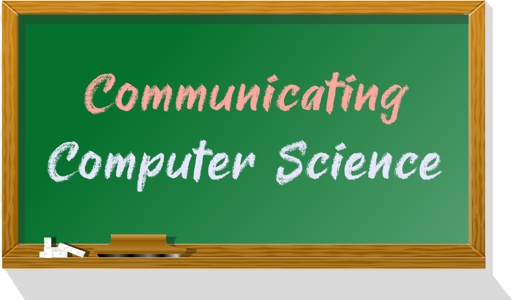

COMP 335 – Communicating Computer Science (2022/23)
This is an archived version of this module from the academic year 2022-23.

Communicating Computer Science (COMP 335) is a third-year undergraduate module on computer science pedagogy that can serve as an entry route into a computer science teacher track. Students get a hands-on introduction to teaching through designing and delivering a computer science lesson to key stage 3 students.
Quick links
Teaching Evaluation
Below are the results of the University’s end-of-module survey.
Timetabled sessions
For an overview of the module, please check the syllabus on Canvas.
We will have a few interactive lectures starting in the week of Sept 26. Our regular lecture slot is
- Friday 10:00 – 11:00 in Chemistry, Brunner LT
for the first 5 weeks of the term. We also have two extra slots booked
- Nov 7 and Dec 5, 15:00 – 17:00 in Waterhouse B Block, Room BG12
for discussing your lesson plans.
If you are registered for the module, you should see this reflected in your timetable.
Lectures
The module will consist of the following units (covering a week each):
- Unit 0 – Administrativa
- Unit 1 – National Curriculum in Computing
- Unit 2 – Empirical Science & Statistics
- Unit 3 – Motivation & Learning Theory
- Unit 4 – Lesson Planning
Assessment
The final grade for the module is the weighted average of the following continuous-assessment tasks:
- Essay (15%)
- Lesson plan (35%)
- Lesson delivery (35%)
- Reflective report (15%)